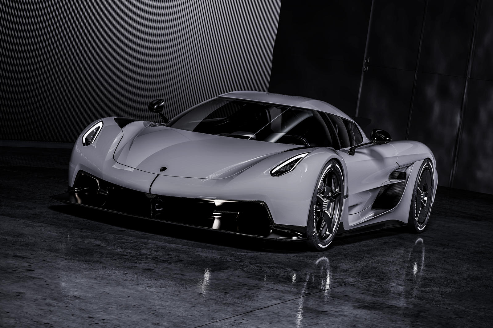
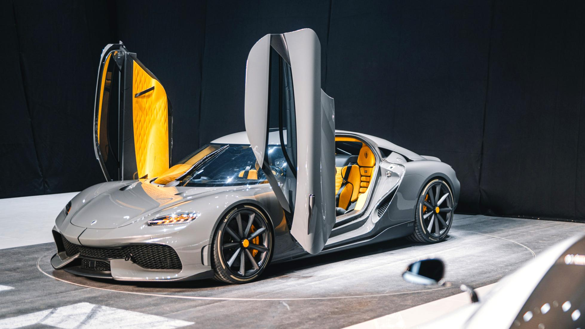

The Koenigsegg Regera

Is specifically designed to be a luxury Megacar alternative to Koenigsegg’s traditional extreme, light weight, race-like road cars.
The Koenigsegg Regera combines a powerful twin-turbo V8 combustion engine with three electric motors and cutting edge battery power via new powertrain technology called Koenigsegg Direct Drive.
This revolutionary technology removes the traditional gearbox, making the car lighter and more efficient.
The Koenigsegg Jesko Absolut
The Koenigsegg Jesko Absolut has been unveiled. It is the fastest Koenigsegg ever made and the company will never endeavor to make a faster series-production road car – ever. Customers will be able to choose between the Jesko Absolut and the more track-oriented Jesko version that was presented a year ago. Every surface element on the Jesko Absolut has been purposefully constructed to reduce drag or surrounding turbulence around the car while increasing high-speed stability. Although just as powerful, the Jesko Absolut is a more seamless and stealthier interpretation of the Jesko, its track-focused sibling.
The Konneiseg Gemera
Ultimate performance has belonged to the world of two-seaters with very limited luggage space – until now. The Gemera is the world’s first Mega-GT and Koenigsegg’s first four-seater. Extreme megacar meets spacious interior and ultimate environmental consciousness.